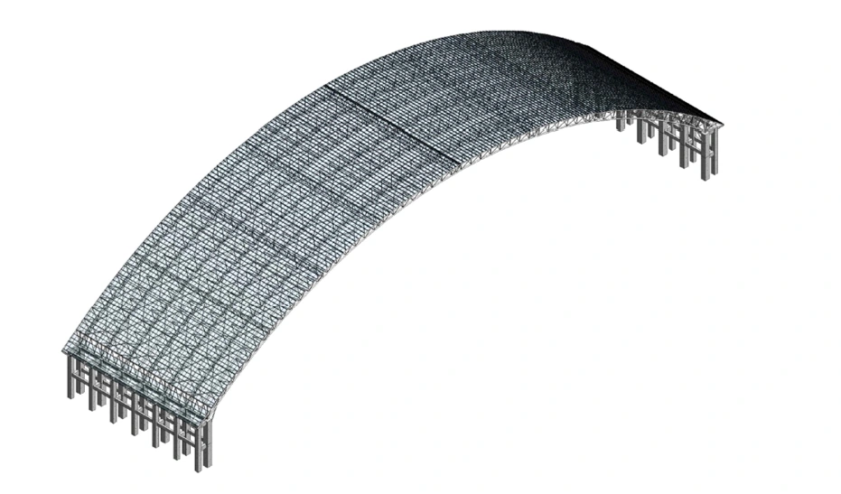
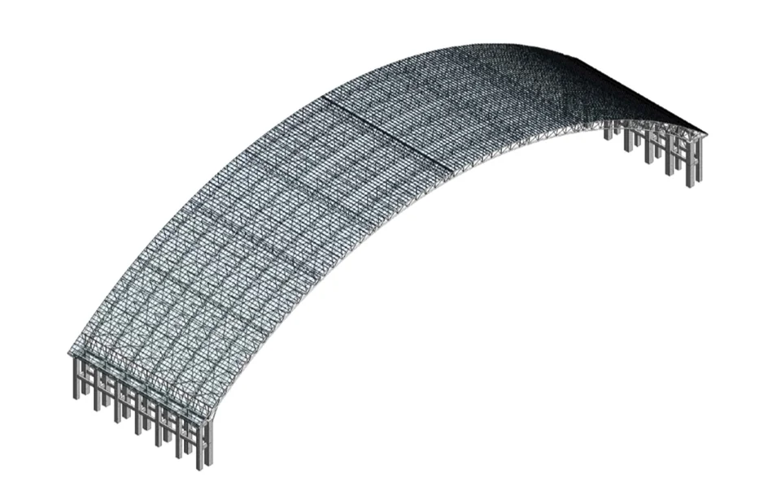
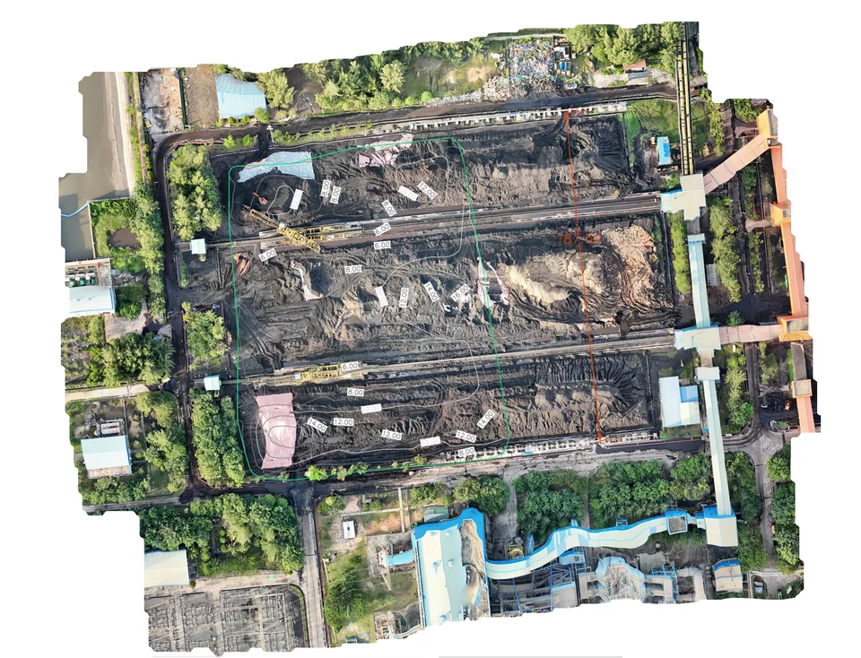
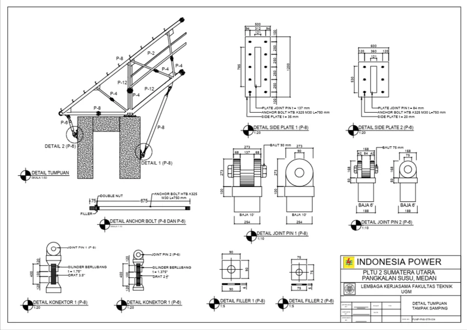
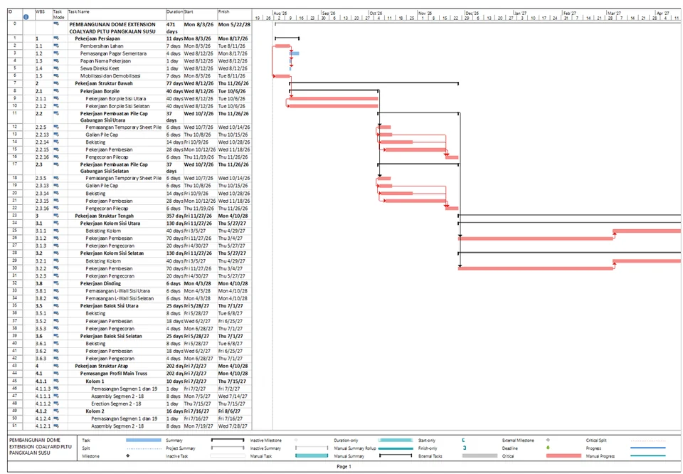
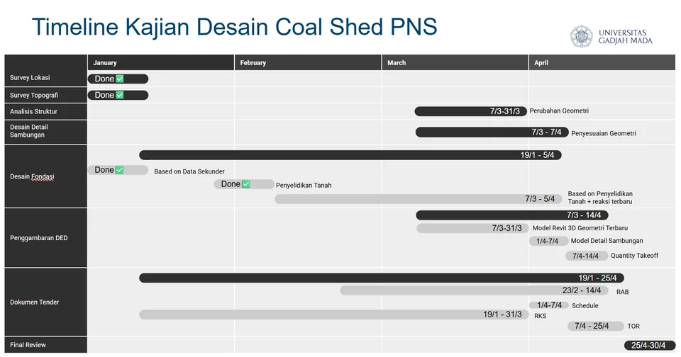
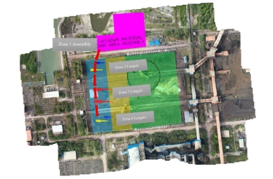
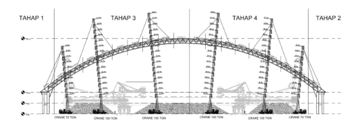

Coal Shed PLN —
Pangkalan Susu, North Sumatra
Schedule, Technical Specifications, 3D BIM modeling, and Detailed Engineering Design for a coal storage facility at PLN Pangkalan Susu power plant, including topographic analysis and comprehensive project documentation.

Overview
This project involves providing engineering support for a coal storage shed facility at PLN's Pangkalan Susu power plant in North Sumatra. As Project Assistant, the work spans from initial site data analysis through to complete engineering documentation ready for construction.
The coal shed is a critical infrastructure component for the power plant's fuel supply chain, requiring precise structural design and detailed BIM modeling to support the construction and maintenance teams.
Scope of Work
- Analyzed topographic survey data to understand site conditions and constraints
- Developed a full 3D Building Information Model (BIM) of the coal shed structure using Autodesk Revit
- Produced Detailed Engineering Design (DED) drawings and documentation
- Drafted Technical Specifications (Rencana Kerja dan Syarat / RKS) for construction
- Drafted detailed construction and erection methods
- Established comprehensive project schedules using Microsoft Project
Key Deliverables
- 3D BIM model (Revit)
- Complete DED
- Technical Specifications (RKS) document
- Project schedule (Gantt chart) in Microsoft Project
- Research Report






